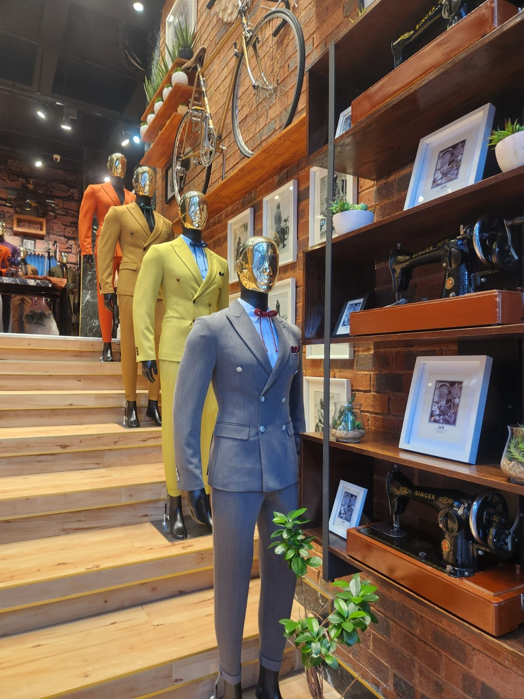
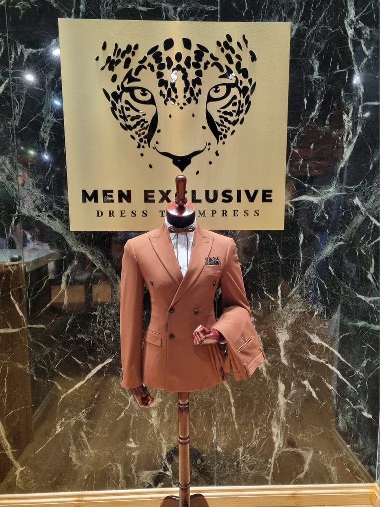
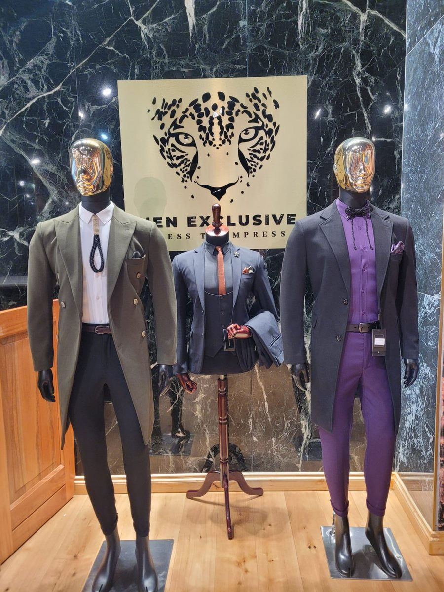
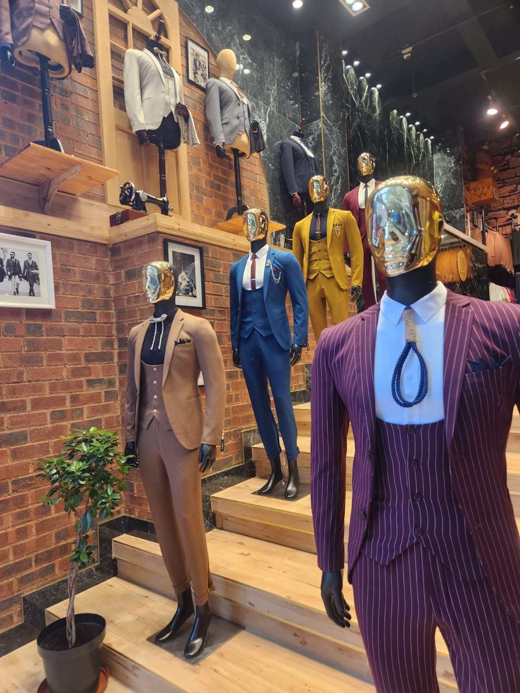
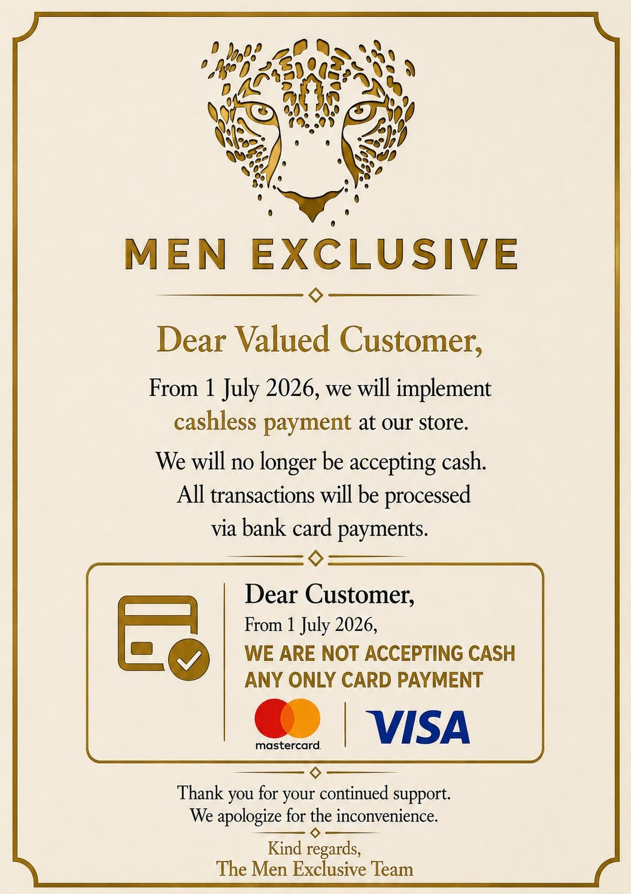

Johannesburg CBD Bought off the rail. Cut to fit you before you leave.
Most alterations, done in-house while you wait
Walk-in fittings — no appointment needed
Delivery where your sizes are already on file
A tailor at the back of the shop.
Men Exclusive is a menswear shop with a tailor working behind it. You choose from the rail — suits, coats, shirts, ties — and the garment is taken in, let out, shortened or reshaped on the premises before you walk out with it.
Nothing is sent away. That is the whole reason the turnaround is measured in minutes rather than weeks.

What hangs on the rail.
Suits
Stock changes weekly. Message us for what is on the rail today.
No appointment. No mystery.
The days you are looked at closely.
& Lobola
Weddings & LobolaGroom, father, brothers — fitted together, in one visit.
Dance
Matric DanceA first proper suit, altered to actually fit him.
CorporateInterviews, boardrooms, court. Quietly correct.
WinterA coat cut close enough to wear over a suit.
Three steps, one visit.
Choose
Walk in and go through the rail. No appointment, no fitting slot to book. Tell us the occasion and we will pull what suits it.
Fit
The garment is pinned on you and taken to the bench at the back. Most alterations take twenty minutes to an hour.
Wear
You leave dressed. If we already have your sizes on file, we can deliver instead — up to five working days.
Dressed from collar to cuff.
Each figure below is simply the parts added up — nothing is marked up for being sold together.
The Boardroom
- Three-piece suitR3 000
- ShirtR450
- TieR150

The Occasion
- Double-breasted suitR2 500
- ShirtR450
- TieR150

The Winter Standard
- Winter coatR1 500
- Three-piece suitR3 000
- ShirtR450
- TieR150
Come in and be measured.
- Address
- Johannesburg CBD, Gauteng Exact street address confirmed on WhatsApp — message us and we will send a pin.
- Hours
-
Monday to Friday, 09:00 – 18:00
Saturday, 09:00 – 15:00 Message before travelling if you are coming late in the day. - Payment
- Card only — Visa and Mastercard Cash is not accepted. This has been our policy since 1 July 2026.
- Our premises
- We trade from a legally leased shop. Government operations in the area have not affected our lease or our trading. We are open as usual.
- Reach us
-
+27 63 051 2118 — call or WhatsApp
Atmenexclusive4@gmail.com
Facebook

Please bring your card.
Men Exclusive has been cashless since 1 July 2026. Cash is not accepted. Every purchase and every alteration is paid by bank card — Visa or Mastercard.
It is the one thing worth checking before you travel in.
